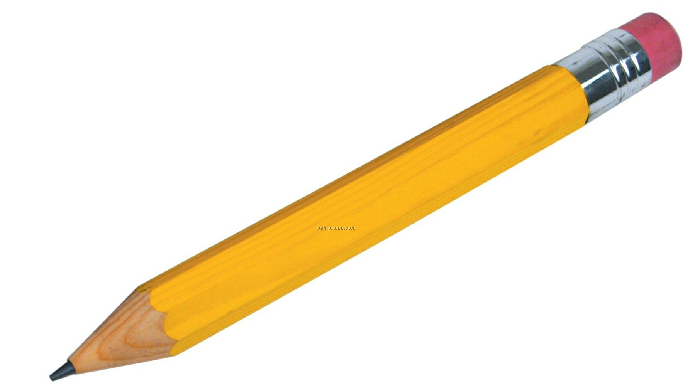

The Job and Required Skills
A 2D animator's working environment has a small variety of areas to work in. They work either in office buildings or in their own homes. The appeal of 3D animation has been increasing, however, which creates an increasing need for 3D animators. Because of this most 2D animators work for small studio companies, small design firms, or independent contractors. So persuasion and communication is a key characteristic needed to find jobs. They make many animations for advertisements, video games, TV shows educational videos.
Animators usually work full-time, working about 35-40 hours a week. However, approaching deadlines may force animators to increase their work hours.
There are multiple characteristics all animators must have in order to convince people of hiring them. Creativity and technological skills are key. They must have knowledge of the latest computer softwares to make their animations look good. Knowing this will let all the other needed characteristics fall into place.
An animator must have a big imagination to make his/her animation stick out and look entertaining to look at. There are also a number of art skills that an animator must have to make his/her character design, animation flow, and other good visuals. They must be good at drawing(for good visuals), graphic designing(same reason), writing(to give the characters and the story life), sound recording, and film making.